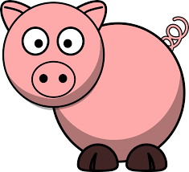

Welcome to Pigs - the Dice game
 Here we hope you can enjoy learning the history, strategy and playing the wonderfully simple dice game Pigs
It is an extremely simple game. Grab yourself a single six-sided die and willing competitor and begin rolling. For each result above one add the amount to your total points earned this round. But be careful if you roll a one your turn and the entire round of points are lost. Balancing greed for more points against the value of your acquired total is key to victory. Whenever you satisfied with your total for a round pass the dice to your opponent and bank all the points from the round.
The first player to reach 100 points is the winner. Good luck